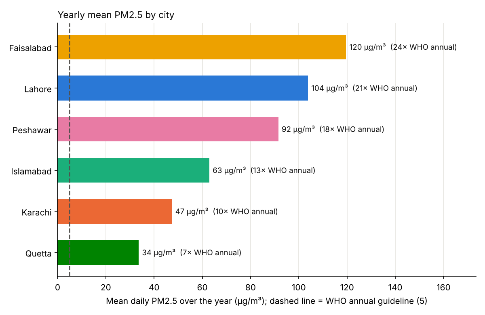
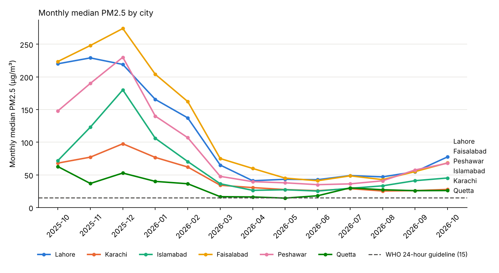

Data analysis · Air quality · Pakistan
Six Pakistani cities, one year of air
Faisalabad, not Lahore, was the worst. Peshawar was the quiet third.
By Muzammal Hussain · 18 October 2026 · 6 min read
Lahore dominates every conversation about smog in Pakistan. In my earlier analysis, Lahore did not have a single day within the WHO guideline in a whole year. That raised a fair question: is Lahore unusual, or is this the normal state of Pakistan's cities? I applied the same method, the same rules and the same twelve months to six cities.
Key findings
- No city met the WHO 24-hour guideline, which allows only 3-4 days above 15 µg/m³ a year. Even Quetta, the cleanest, was above it on 307 of 364 days.
- Faisalabad was worse than Lahore: a yearly mean of 119.6 µg/m³ (24 times the WHO annual guideline), no clean day, and the worst day in the study, 407 µg/m³ on 14 January 2026.
- Peshawar ranked third (91.5 µg/m³), ahead of Islamabad and Karachi, despite getting little public attention.
- Winter is what separates the cities. In summer all six looked similar; in winter Faisalabad's monthly median was more than five times Quetta's.
Data and method
- Source: OpenAQ, an open air-quality data platform. Daily PM2.5 for every fixed sensor within 25 km of each city centre, 18 October 2025 to 18 October 2026.
- Same rules for every city: remove impossible values and days with poor hourly coverage, then take the median across a city's sensors for each day.
- Fair comparison: a city was included only with at least 3 sensors and 300 days of data. All six passed.
- Reproducibility check: Lahore's numbers matched my earlier separate analysis exactly.
The ranking

| City | Yearly mean | × WHO annual | Clean days | Days > 75 |
|---|---|---|---|---|
| Faisalabad | 119.6 | 24 × | 0 | 48% |
| Lahore | 103.8 | 21 × | 0 | 46% |
| Peshawar | 91.5 | 18 × | 1 | 40% |
| Islamabad | 62.9 | 13 × | 4 | 27% |
| Karachi | 47.4 | 9.5 × | 4 | 20% |
| Quetta | 33.6 | 7 × | 57 | 6% |
"Clean days" are days at or below the WHO 24-hour guideline of 15 µg/m³; values are in µg/m³. Faisalabad and Lahore did not have one. Quetta had 57, still far short of a healthy year.
Winter tells the story

From May to August the six cities sat close together, with monthly medians between about 22 and 45 µg/m³. From November to January they pulled apart: from 43 µg/m³ in Quetta to 242 µg/m³ in Faisalabad. Winter air was about five times worse than summer air in Faisalabad, Peshawar, Islamabad and Lahore, but only about twice as bad in Quetta.
Out of 78 city-months in the study, exactly one had a median within the WHO guideline: Quetta in May 2026, at 14.4 µg/m³.
Why these cities differ
The data shows when and where the air is worst; it does not measure why. Several well-known factors fit the pattern and are the next things to test:
- Faisalabad and Lahore are Punjab's dense industrial and population centres, with textile mills and heavy industry, very heavy traffic, crop-residue burning in the surrounding farmland, and the geography of the Indo-Gangetic plain, where winter inversions trap pollution close to the ground.
- Karachi may benefit from sea breezes that keep moving polluted air away.
- Quetta sits at high altitude, with lower industrial density than the plains.
Peshawar deserves more attention than it gets. Its winter peak (a monthly median of 230 µg/m³ in December) was almost level with Lahore's.
Who is measuring?
All six cities had data on 364 days, but the monitoring is very uneven. On a typical day Lahore had 46 sensors reporting, Karachi 14, Islamabad 18, Faisalabad 20, Peshawar 9 and Quetta only 7. Of the 223 sensors used, just one is a reference-grade monitor, in Islamabad; the rest are low-cost sensors.
That matters. With few sensors, a city's numbers can be swayed by a handful of local pockets, so the results for Quetta and Peshawar are less certain than for Lahore. Low-cost sensors can also read high in humid conditions, and humidity differs a lot between coastal Karachi and dry Quetta.
Limitations
A fixed 25 km circle is a simple definition of a city; Islamabad's circle also covers much of Rawalpindi. A yearly mean of daily values approximates, but is not, an official annual mean. The causes discussed above are hypotheses, not results.
Next steps
- Apply a humidity correction to the low-cost sensors and check whether the ranking holds.
- Add wind, temperature and satellite fire counts to test the explanations.
- Build a small AI agent that answers questions about these cities' air, in English and Roman Urdu, using this data as a tool.
Data: OpenAQ (openaq.org), daily PM2.5 aggregates; the licences of the individual data providers apply. Guideline values: WHO Global Air Quality Guidelines (2021).